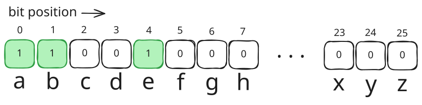

The Idea
Suppose you need to track a Boolean state for every items in a collection. First idea that comes to mind is to use a hash map:
states := make(map[string]bool)
states["item1"] = true
states["item2"] = false
...
This was fine for most data. But if your data has certain set of range, there is a more efficient and faster way to store this: Bitmask.
Imagine i have to store the state of appearance of English alphabets in a string:
appears := make(map[rune]bool)
word := "abBCab"
for _, c := range word {
appears[c] = true
}
...
Notice that the range of the data (letters) has the size of 26 (a-z). So instead i can just store it inside a single 32-bit integer as bits (1 for true, 0 for false).
For example, appearances of alphabets inside string “abe” can be stored as:

To mark letter 'b' (index 1) as appeared:
1 << 1
The binary representation would be:
0000...00010
For letter ‘a’ (index 0): 1 << 0 -> 0000...00001 .
For letter ’e’ (index 4): 1 << 4 -> 0000...10000 .
Implementation
Storing new value
Suppose we want to store the appearance of letters in a 32-bit integer appears. To mark the new character newChar as being appeared without clearing the already saved value, we would use bitwise OR operator (|):
appears |= ( 1 << (newChar - 'a'))
Explanation:
- In Go, a rune (character) just an alias of 32-bit integer (int32) for its Unicode code point.
- We want the character
'a'to always reserve the index 0, so subtracting a character with it will return an index relative to it. For Example'e' - 'a'would the same as101 - 97, therefore will return4as we want the charactereto be stored in index 4 1 << index: shifts a1into the index|=: apply bitwiseORin theappearsvariable without disturbing the other bits. For example if the existing bits are0101, the operation0101 |= 0011 will return0111`
Counting the data
To count how many “set” bits are in the data (for 32-bit integer):
import (
"math/bits"
)
...
bits.OnesCount32()
...
For example if the stored bits are 01111011 that function will return 6.
Case Study
We will implement this technique to solve leetcode #3120 - Count the Number of Special Characters I.
You are given a string `word`. A letter is called "special" if it appears BOTH in lowercase and uppercase in `word`.
Return the number of **special** letters in `word`.
Example 1:
Input: word = "aaAbcBC"
Output: 3
Explanation:
The special characters in `word` are `'a'`, `'b'`, and `'c'`.
Example 2:
Input: word = "abc"
Output: 0
Explanation:
No character in `word` appears in uppercase.
Example 3:
Input: word = "abBCab"
Output: 1
Explanation:
The only special character in `word` is `'b'`.
Constraints:
- 1 <= word.length <= 50
- word consists of only lowercase and uppercase English letters.
To solve this problem we have to find a way to store the appearance of each letter, both the lowercase and uppercase versions, inside the word to a variable.
Using hash map
The common way is to provide hash maps for this:
lower := make(map[rune]bool)
upper := make(map[rune]bool)
for _, c := range word {
if c >= 'a' && c <= 'z' { // if it's in the lowercase alphabets range
lower[c] = true
} else {
upper[c] = true
}
}
Then we count the appearance of characters ONLY if the lowercase and uppercase versions of the character has marked true:
count := 0
for c := range lower {
if upper[c-32] { // 'a'-'A' == 32
count++
}
}
return count
Using bitmask
The structure of the algorithm is similar to the hash map version but we use two int32 instead of map. Then we apply the bitwise insertion as we’ve discussed in teh previous section:
var lower, upper int32
for _, c := range word {
if c >= 'a' && c <= 'z' {
lower |= 1 << (c - 'a')
} else {
upper |= 1 << (c - 'A')
}
}
To count the appearance of the “special” characters, we apply bitwise AND operator to both lower and upper then use bits.OnesCount32 to count the resulting 1s:
return bits.OnesCount32(uint32(lower & upper))
Full code:
import (
"math/bits"
)
func numberOfSpecialChars(word string) int {
var lower, upper int32
for _, c := range word {
if c >= 'a' && c <= 'z' {
lower |= 1 << (c - 'a')
} else {
upper |= 1 << (c - 'A')
}
}
return bits.OnesCount32(uint32(lower & upper))
}
Analysis
Why is this better than a map?
| Map | Bitmask | |
|---|---|---|
| Space | ~50 bytes per entry | 8 bytes total (two int32s) |
| Lookup | Hash + pointer chase | Single bit test (& 1) |
| “Count set” | Look over map | 1 CPU instruction (POPCNT) |
For this specific problem, 26 possible letters, Boolean state only, a bitmask is the perfect fit. The technique generalizes to any problem where you’re tracking membership across a small, fixed set of items.
Beyond the 32 slots of states
If our problem requires more than 32 slots to store the states, Go provides some data types we can use:
| Type | Bits/slots | Use when |
|---|---|---|
int32 |
32 | up to 32 items (r.g. 26 alphabets) |
int64 |
64 | up to 64 items |
| uint64 | 64 | same, but bits.OnesCount64 works directly |
var mask uint64
mask |= 1 << (c - 'a') // same pattern as before, just bigger
bits.OnesCount64(mask)
Beyond 64 slots
Go’s math/big package gives you an arbitrary-precision integer, which you can use as an unlimited bitmask:
import "math/big"
mask := new(big.Int)
mask.SetBit(mask, index, 1) // set bit at position `index`
mask.Bit(index) // read bit (returns 0 or 1)
// AND two masks
result := new(big.Int).And(maskA, maskB)
// Count set bits
result.OnesCount() // added in Go 1.24
The downside is heap allocation and slower operations, no single CPU instruction anymore (the hardware’s POPCNT).
For faster data type for 64 slots, use []uint64.
type BitSet []uint64
func NewBitSet(size int) BitSet {
return make(BitSet, (size+63)/64) // how many uint64s needed
}
func (b BitSet) Set(i int) {
b[i/64] |= 1 << (i % 64) // which chunk, which bit within it
}
func (b BitSet) Get(i int) bool {
return b[i/64]>>(i%64)&1 == 1
}
func (b BitSet) OnesCount() int {
count := 0
for _, word := range b {
count += bits.OnesCount64(word)
}
return count
}
This stays fast because each uint64 chunk still uses the hardware POPCNT instruction. This is also what competitive programmers and standard libraries actually use. We manually chunk the bits across multiple uint64s.
The []uint64 slice approach is also what libraries like github.com/bits-and-blooms/bitset give us, with AND/OR/count already implemented, worth knowing it exists for contest or production use.